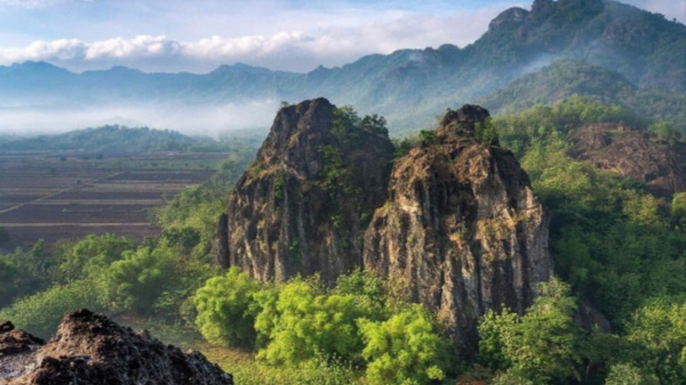
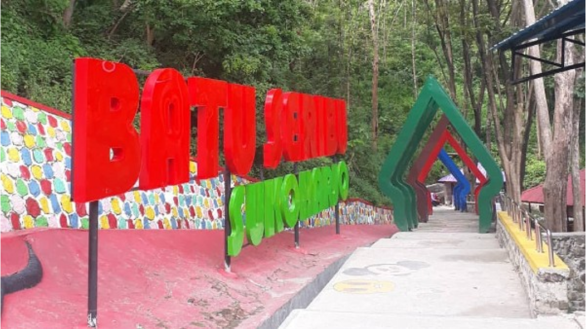
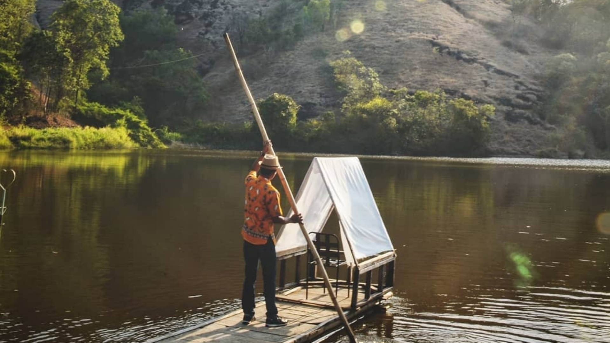

Mount Sepikul

Mount Sepikul is located in Bulu District. Even though the name is a mountain, it looks more like a hill because it is not too high.
This place is suitable for selfies because the view from above is beautiful
Batu Seribu

Batu Seribu is located in Bulu district, this place offers the sensation of swimming with a natural atmosphere.
Telaga Claket

Telaga Claket is located in the border area between Wonogiri and Sukoharjo Regencies. Here, you will be presented with a lake view with cliffs and hills around it.
Apart from being suitable as a photo hunting spot, Telaga Claket also has a favorite spot for fishing hobbyists.
❮
❯